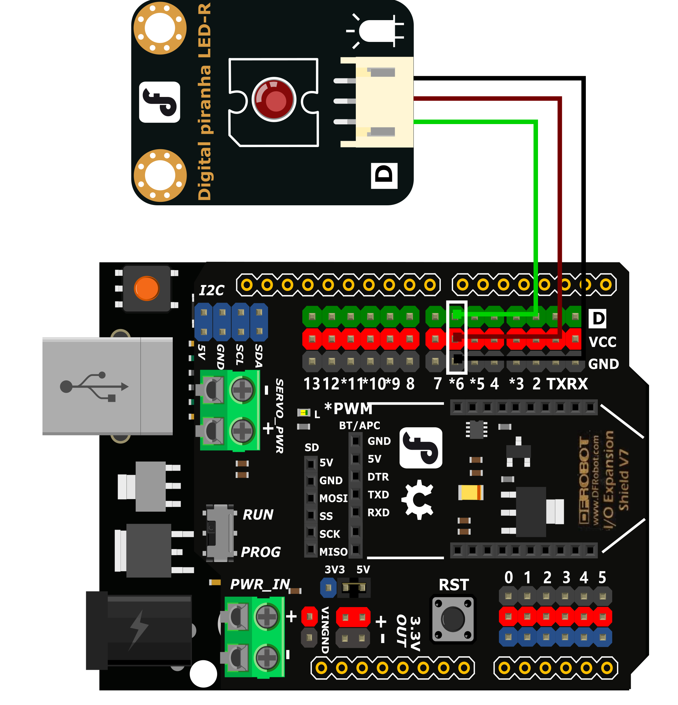

调光台灯¶
一、概述¶
在前面的课程中我们学会了如何点亮并控制LED灯，那LED灯的亮度我们可以调节吗？如果输出的值不是数字量，而是模拟量，是不是就可以实现通过数值来精确控制灯光亮度了。
在上节课的设计中，我们使用的是按钮控制灯的亮灭，按钮只有两个状态，是没办法输出模拟值的，所以本项目我们就需要使用到旋钮来作为灯光亮度的输入。

二、项目实施¶
（1）渐变灯光¶
硬件准备：
主控：Arduino UNO、IO 传感器扩展板 V7.1
模块：LED发光模块
连接线：TypeAtoB方口USB连接线
将LED发光模块接入6号数字引脚
程序编写：
打开pingpong库的官方文档，找到基础库示例中的“模拟输出”，并用IDLE打开。

摁下F5运行程序，查看效果。LED灯会逐渐变亮，当到最亮时熄灭再慢慢变亮，循环变化。
（2）旋钮调光¶
在上步完成的功能中,我们旋钮来精确的控制LED灯的亮度。
硬件准备：
主控：Arduino UNO、IO 传感器扩展板 V7.1
模块：LED发光模块、旋钮模块
连接线：TypeAtoB方口USB连接线

将LED发光模块接入6号数字引脚，将旋钮模块接入A0模拟引脚
程序编写：
导入必要的包和初始化设置。
import time
from pinpong.board import Board,Pin
Board("uno").begin() #初始化，选择板型和端口号，不输入则留空进行自动识别
pwm0 = Pin(Pin.D6, Pin.PWM)
adc0 = Pin(Pin.A0, Pin.ANALOG) #将Pin传入ADC中实现模拟输入
我们需要将旋钮输出的模拟值转换为LED灯亮度的PWM值，为了得到整数这里用了整型功能int。
v = adc0.read_analog() #读取A0口模拟信号数值
L = int(v*255/1024)
接着让LED灯根据我们转换过的数值亮起。
pwm0.write_analog(L) #PWM输出
print("A0=",L)
运行代码，旋转旋钮LED灯会慢慢亮起和熄灭。

三、代码分析¶
import time
from pinpong.board import Board,Pin
Board("uno").begin() #初始化，选择板型(uno、leonardo、xugu)和端口号，不输入端口号则进行自动识别
pwm0 = Pin(Pin.D6, Pin.PWM) #初始化引脚为PWM模式 模拟输出方法2
adc0 = Pin(Pin.A0, Pin.ANALOG) #引脚初始化为电平输出
while True:
v = adc0.read_analog() #读取A0口模拟信号数值
L = int(v*255/1024)
pwm0.write_analog(L) #PWM输出
print("A0=",L)
数据类型-整数类型
在我们做运算的时候，传感器读取到的数值经过*180/1024运算的结果往往不会是一个整数，常常会带着长长的小数尾数。我们试着不加int整形得到的结果如下：

这样的数值我们是无法直接使用的，所以就需要使用到整形int将数据取整。